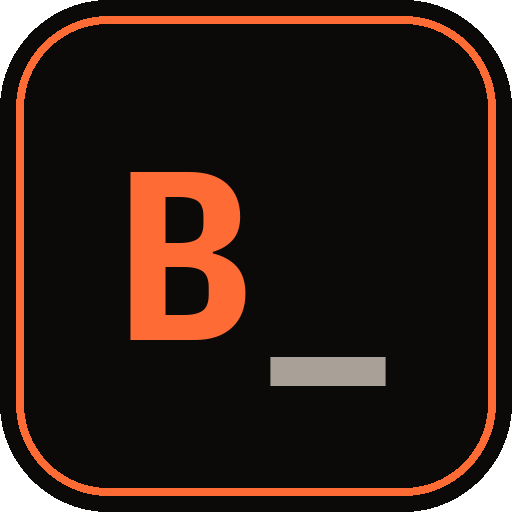

macOS
あなた向け ◀ RECOMMENDED FOR YOUUNIVERSAL — Apple Silicon & Intel
⬇ .dmgmacOS · universal · Apple Silicon & Intel両アーケクチャ対応のユニバーサルビルド。.dmg を開いて Applications へドラッグ。
macOS が「不明な開発者」と言う場合は: 右クリック → 開く。

ラストの遠回りを、やめよう。
LEARN RUST WITHOUT THE 700-PAGE DETOUR.
Short lessons. Real practice. Small projects.
A native desktop trainer for macOS, Windows & Linux.
今、ダウンロード可能 — AVAILABLE NOW!!
▼ ダウンロードする DOWNLOAD NOW「 borrowing 」
borrow_ is a lightweight Rust fundamentals trainer that lives on your desktop. Eleven modules. Lessons you actually type. Exercises that run your code and tell you exactly what broke. A playground backed by the real compiler — not a toy sandbox.
Learn the fundamentals by writing Rust, not by reading about it. The borrow checker stops being the villain and starts being your study buddy.
Built by wyde industries · shipped as a native GPUI app · local-first SQLite · Google / GitHub sync
let s1 = String::from("hello");
let s2 = s1; // s1 は move された
println!("{s1}");
✗ E0382 — borrow of moved value: `s1`
// 💡 ヒント: s1.clone() を試してみよう「 機能 」
Native GPUI app. Local-first SQLite. Works on a plane. Syncs when you're back online.
Every lesson ends with an exercise that runs your code and points at what broke — line by line.
The playground is backed by rustc itself. If it compiles here, it compiles out there.
Sign in with Google or GitHub. Your streak and solved exercises follow you across machines.
モジュール 1–3 are free forever. BORROW Pro — $5/month unlocks modules 4–11, the full playground, and progress sync. Cancel anytime. No dark patterns, no upsell popups mid-lesson.
「 カリキュラム 」
…全11モジュール · 284レッスン — そして5つの小さなプロジェクトで締めくくる。
「 ダウンロード 」
VERSION 0.1.0-rc.1 · PRERELEASE リリース候補
お使いのOSを検出しています…
UNIVERSAL — Apple Silicon & Intel
⬇ .dmgmacOS · universal · Apple Silicon & Intel両アーケクチャ対応のユニバーサルビルド。.dmg を開いて Applications へドラッグ。
macOS が「不明な開発者」と言う場合は: 右クリック → 開く。
x64 — Windows 10 / 11
⬇ Installer.exeWindows · x64 · NSIS installerWindows 10 / 11 x64。SmartScreen が出たら 詳細情報 → 実行する。Windows on ARM はエミュレーション経由で動作します(ARM ネイティブ版は未提供)。
x86_64 — AppImage & .deb
⬇ AppImage 推奨Linux x86_64 · runs anywhere ⬇ .debDebian / Ubuntu · x86_64AppImage はどこでも動く。Debian / Ubuntu は .deb を。ARM 版はまだありません。
🔏 SHA256SUMS を確認する — ダウンロードしたファイルのハッシュを照合しよう。